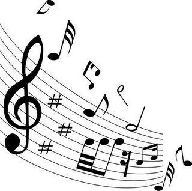

Quais são as Notas Musicais?
As Notas Musicais são sete: DÓ – RÉ – MI – FÁ – SOL – LÁ – SI. Representadas por monossílabos, elas são utilizadas na composição de músicas.
Como um alfabeto musical, permitem agregar as frequências dos sons, viabilizando a composição musical ou, em outras palavras, uma combinação que gera melodia.
Essa classificação, a que se dá o nome de “notação musical”, foi inventada pelo monge e regente italiano Guido D'Arezzo (992-1050). A notação foi inspirada no “Hino a São João Batista”, cuja inicial de cada verso corresponde a uma nota musical.
Em inglês e em alemão, em vez dos monossílabos, são usadas as 7 primeiras letras do alfabeto, as quais apresentam a seguinte correspondência:
A = LÁ, B = SI, C = DÓ, D = RÉ, E = MI, F = FÁ, G = SOL ou H = SOL, em alemão.
Símbolos Musicais
Além das notas, existem ainda símbolos musicais muito importantes. Chamados de claves, existem três tipos:
Clave de Sol

Clave de Fá

Clave de Dó
Características Sonoras
Altura
A altura do som permite classificar a frequência das ondas sonoras. Desta maneira, os sons graves são considerados de baixa frequência, enquanto os sons agudos são os de alta frequência.
Intensidade
A intensidade do som está intimamente relacionada ao volume das ondas sonoras. Em outras palavras, a intensidade do som é uma característica sonora relativa ao nível da pressão e da energia presente nas vibrações das ondas sonoras.
Duração
A duração da música está pautada na quantidade de tempo em que ocorre um fenômeno musical. Assim, a duração é um intervalo de tempo de uma nota musical ou o tempo entre duas notas (pausa).
Timbre
O Timbre é uma característica musical que nos permite classificar a fonte de uma nota musical. Basta ouvir a mesma nota musical em instrumentos diferentes, como o violino e o piano, e o resultado será a percepção de timbres diferentes.
Escala
A escala musical é a frequência ordenada do som, isto é, o conjunto das sete notas musicais, com a repetição da primeira. (Do-Re-Mi-Fá-Sol-Lá-Si-Do). Além disso, a escala musical pode ser ascendente e descendente dependendo da frequência vibratória dos sons.
Escrita Musical
As notas musicais são representadas na partitura, que é um conjunto de cinco linhas (pautas ou pentagramas).
![Imagem possui um fundo branco, tendo 5 linhas retas pretas na horizontal tendo 2 linhas e meia dessas 5 linhas, Na parte superior no centro está escrito 'Asa Branca', no canto superior esquerdo está escrito 'Aluno: Otoniel Vianna', e no canto superior direito está escrito 'Luiz Gonzaga e Hulberto Teixeira'. E abaixo estão as linhas que citei anteriormente formando uma partitura em clave de fá com várias notas colcheias, semínimas, semicolcheias, pausas de mínimas, pausa, semínima, pausas de colcheias, símbolo de ff (forte forte), pp (piano piano (silencioso)), sustenido, 4/4 (tamanho dos compassos).](Imagens/partitura.jpg "Partitura Asa Branca")
As notas também podem ser representadas em cifra:
![Tem o fundo branco, na parte superior tem as seguintes letras e preto: Em (mi), G (sol), D (ré), C (dó), abaixo dessas letras possui linhas ao contário formando quadradinhos, e em cima de algumas linhas podem ter os números: 1, 2, 3 ou 4 envoltos cada por um círculo preto, que significam os dedos que deve posicionar no instrumento de cordas, formando os acordes, e abaixo disso temos mais 2 letras: Am (lá menor) e C/D (dó com baixo em ré), e abaixo delas estão os mesmos quadradinhos que citei anteriormente.](Imagens/cifra.jpg "Cifra")
Ou como tablaturas:
Após a invenção das notas musicais como conhecemos, no século XI, foi criada uma forma de medição da duração das mesmas, a qual recebeu o nome de mensuralismo. A partir dessa técnica, criada no século XII, foi possível representar a música graficamente.